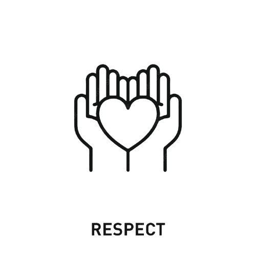

RESPECT

Chacun est écouté, valorisé et traité avec considération.
Exemple : Dans une équipe diversifiée, chaque membre écoute et respecte les opinions des autres, créant un environnement de travail collaboratif.